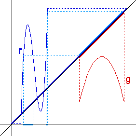

1.

| 2. Project the Range of f horizontally to the diagonal. |
| Project the Domain of g vertically to the diagonal. |
| Find the intersection of these. |
| Project this intersection vertically to the graph of g, then horizontally to the y-axis. This is the Range of gf. |
Return to Domains of Compositions.